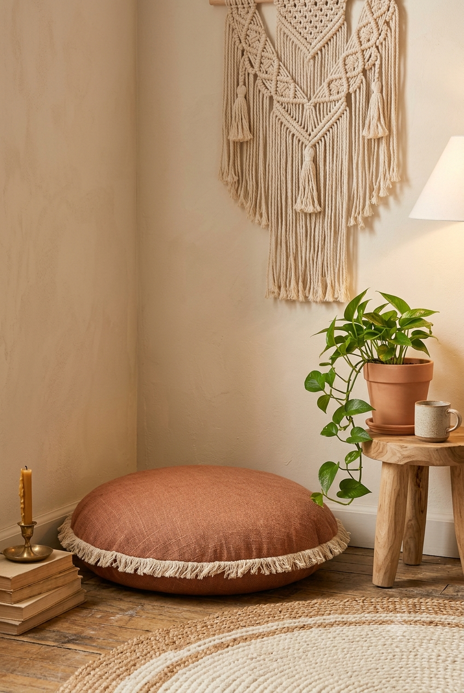

Almost every living room has one corner that's never quite been dealt with — too small for real furniture, too big to ignore, usually collecting whatever doesn't have a home elsewhere. This makeover turns that exact kind of corner into an actual seating spot, for under $100 total.
Ground Level Seating Costs Less
A floor cushion does the job of an accent chair at roughly a third of the cost, and in a genuinely small corner, it often fits better than a chair frame would anyway. Two floor cushions stacked or placed side by side create a casual, low-commitment seating area that doesn't require measuring for furniture clearance.
Fill the Vertical Space
An empty corner reads as "unfinished" mostly because of the bare wall above the seating, not the floor space itself. A macrame wall hanging fills that vertical gap with texture and visual interest, without requiring shelving or furniture that would make the corner feel cramped.
One Light Source, Positioned Low
A small table lamp or battery-operated LED lantern placed on the floor beside the cushions does more to make a corner feel like an intentional spot than overhead lighting ever will. Low, warm light signals "sit here" in a way bright ceiling light doesn't.
A Small Plant Finishes the Look
Corners often lack the greenery that makes the rest of a living room feel lived-in, mostly because most plants need more floor space than a tight corner allows. A trailing plant in a hanging or floor-standing small pot solves this without competing for the seating space itself.
The Full Budget Breakdown
Floor cushion ($34) + macrame wall hanging ($28) + a small plant and pot (roughly $20) + a battery LED lantern (roughly $15) comes in right around $97 — a genuinely styled corner for under $100, with nothing here requiring tools, drilling, or a weekend of work.
Pair this with our Reading Nook Ideas guide if the corner is more about reading than lounging, or browse more Budget Transforms.
* As an Amazon Associate, NestlyVibes earns from qualifying purchases at no extra cost to you. See our Disclosure Policy.